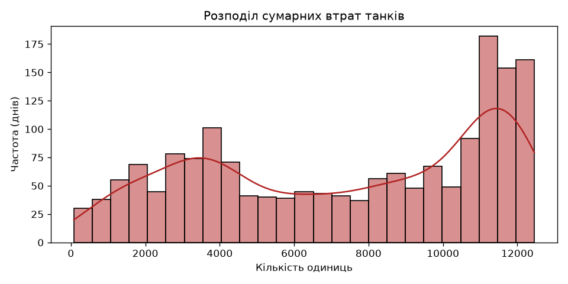
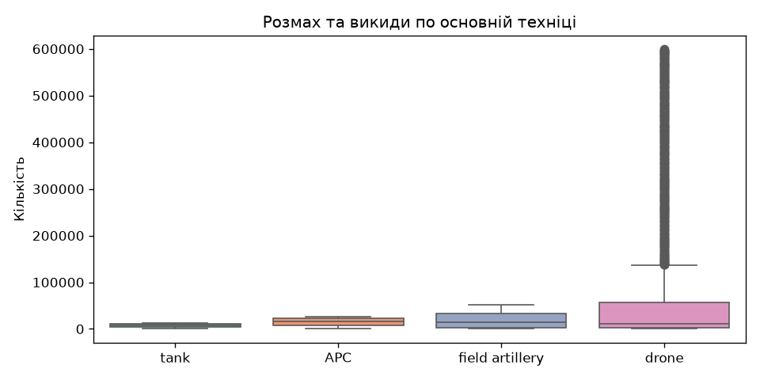
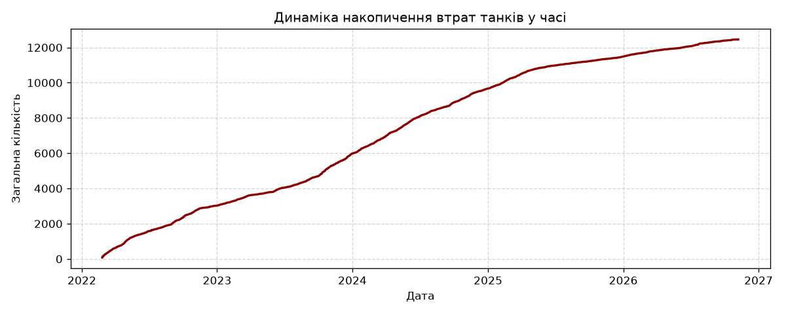
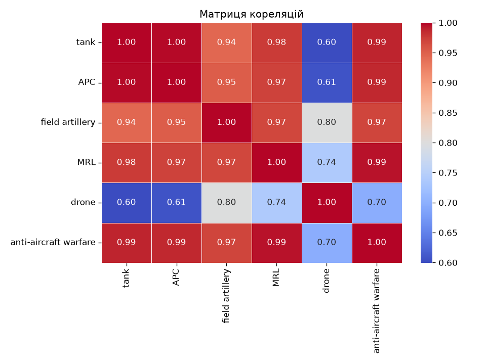

Всього днів спостереження
1717
Максимум втрат танків
12456
Максимум втрат ББМ (APC)
25654
Максимум арт. систем
52000
Візуалізація та розподіл даних
Гістограма втрат танків

Коробкова діаграма (Boxplot)

Динаміка накопичення (Timeline)

Кореляційна матриця (Heatmap)

Аналітичні висновки
- Очищення та структура: Набір даних містить 1717 записів. Пропущені значення в числових показниках успішно оброблено.
- Динаміка показників: Графік часового ряду демонструє неперервний кумулятивний характер зростання загальних втрат (зокрема танків до рівня 12456 од.).
- Взаємозв'язки: Кореляційний аналіз підтверджує наявність сильного лінійного зв'язку між накопиченням різних видів важкої техніки (коефіцієнти кореляції близькі до 1.0), що зумовлено специфікою звітності на основі часових рядів.